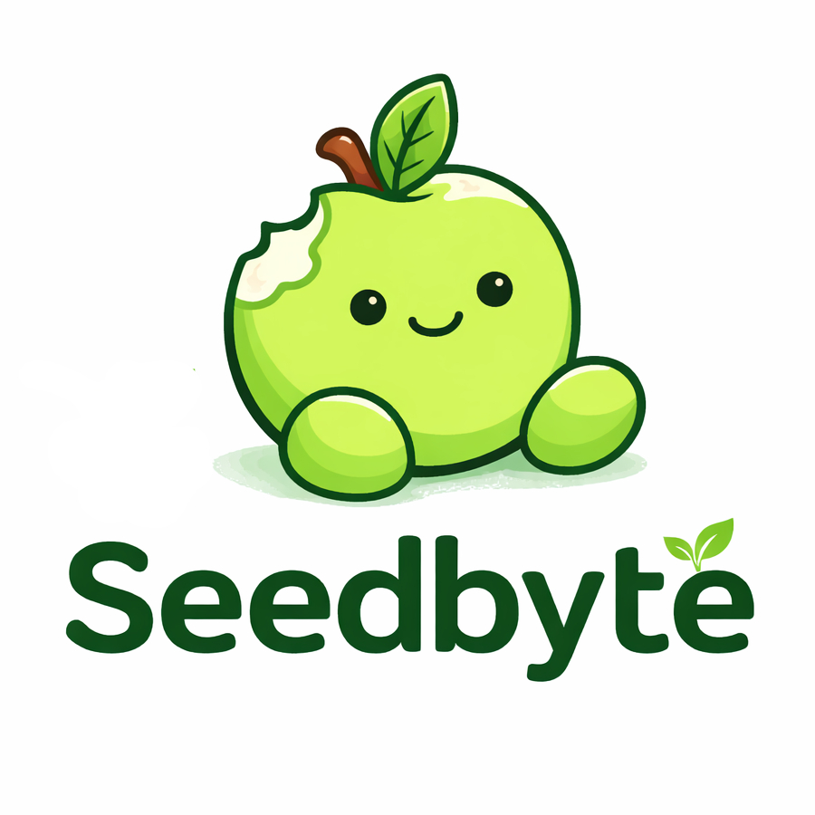

Parece que alguien se tomó muy en serio lo de "morder la manzana" y se comió un byte crítico del sistema.
Estamos reconstruyendo el stack desde la semilla.
Mientras tanto, podés chusmear el laboratorio:
> seedbyte --init
> critical: missing_byte_found_in_stomach
> rebuilding_knowledge_respiring...